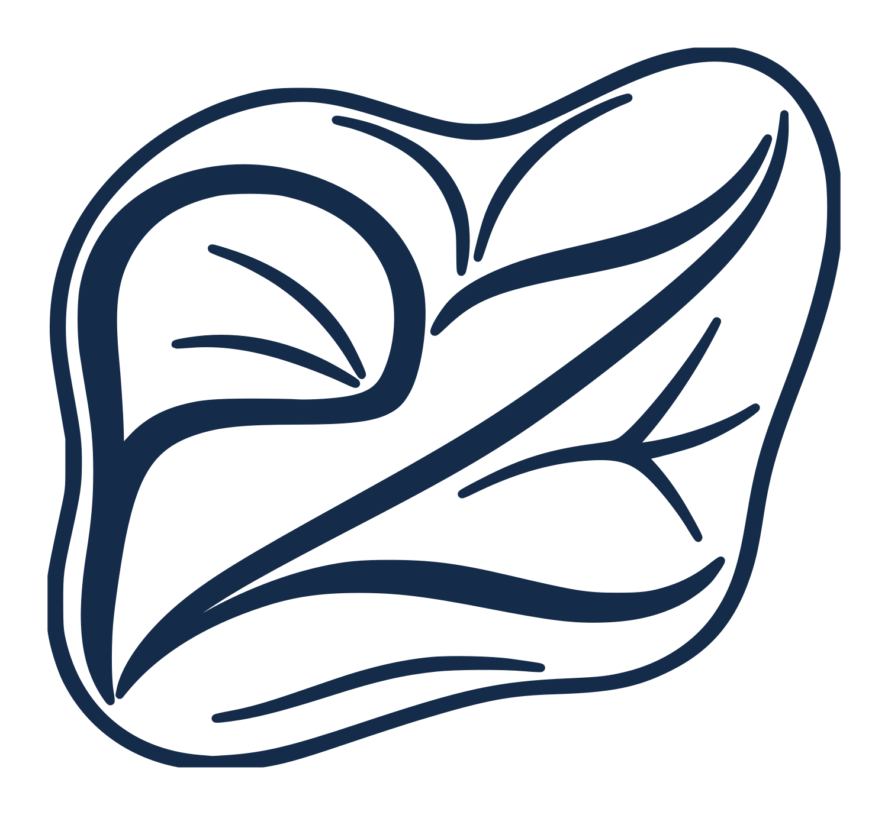

Dentista em Vitória e Vila Velha
Restauração feita com calma, etapa por etapa.
Resina com isolamento absoluto, explicada para você antes, durante e depois. Senta aí que eu te explico.

Sobre
Você vai saber o que foi feito na sua boca.
Sou o Dr. Pedro Zucoloto, cirurgião-dentista, e o meu foco é a dentística restauradora. Em toda restauração eu uso o isolamento absoluto: um lençol de borracha em volta do dente, que mantém a saliva longe e deixa a sua boca livre de algodão e sugador.
Depois do tratamento, eu sento com você e mostro fotos e vídeos do antes, do durante e do depois. Sem pressa e sem termo difícil.

Dr. Pedro Zucoloto · CRO-ES 12314Tratamentos
O que eu faço no dia a dia.
Restauração em resina
Para cárie ou dente quebrado, feita em camadas e com isolamento absoluto, para a resina aderir de verdade ao dente.
Troca de restauração antiga
Restauração escurecida, com fresta ou com cárie por baixo é avaliada e, quando precisa, trocada por uma nova.
Tratamento para evitar extração
Nem sempre extrair é o único caminho. Uma segunda avaliação mostra se dá para manter o dente, por exemplo com elevação de margem.
Avaliação de rotina
Consulta para olhar tudo com calma, achar o problema cedo e cuidar antes que ele cresça.

Por que demora 1 hora
Cada minuto tem um motivo.
A cárie e a restauração antiga saem por completo.
O lençol de borracha mantém a saliva longe e nada cai na sua garganta.
Condicionamento seletivo e sistema adesivo, cada um no seu tempo.
Sistema de matrizes com anel interproximal e resina camada por camada.
Mordida conferida e brilho final: menos placa e menos chance de fraturar.

Restauração rápida nem sempre é boa notícia.
Dúvidas frequentes
O que mais me perguntam.
Por que a minha restauração demora 1 hora?
Porque uma restauração bem feita tem etapas: limpar, isolar o dente, fazer o condicionamento, construir a resina em camadas e polir. Cada uma tem um motivo, e pular qualquer uma encurta a vida da restauração.
Outro dentista disse que precisa extrair. Vale uma segunda avaliação?
Vale. Nem sempre a extração é a única alternativa. Em alguns casos, dá para manter o dente com um tratamento mais conservador. Só a avaliação mostra o que é possível no seu caso.
A minha restauração antiga precisa ser trocada?
Depende. Se ela está escurecida, com fresta na borda ou com cárie por baixo, a troca evita que o problema cresça. Se está boa, ela fica. Na avaliação eu te mostro e explico.
Tenho medo de dentista. Como funciona a consulta?
Antes de começar, eu explico cada etapa e você pode perguntar o que quiser. Se preferir, mande as suas dúvidas pelo WhatsApp antes da consulta.
Onde e quando você atende?
Em Vitória, na Zucoloto Odontologia: terça-feira, das 9h às 18h. Em Vila Velha, na Odontocenter Itaparica: quinta-feira, das 8h30 às 18h, e sexta-feira, das 8h30 às 17h.
Agendar
Agende pelo WhatsApp. Respondo as dúvidas antes da consulta.
Vitória · Santa Lúcia
Zucoloto Odontologia
R. das Palmeiras, 685, 15º andar, sala 1511Santa Lúcia, Vitória, ES · 29056-210
- Terça-feira9h às 18h
Vila Velha · Praia de Itaparica
Odontocenter Itaparica
Av. Santa Leopoldina, 1375Praia de Itaparica, Vila Velha, ES · 29102-040
- Quinta-feira8h30 às 18h
- Sexta-feira8h30 às 17h